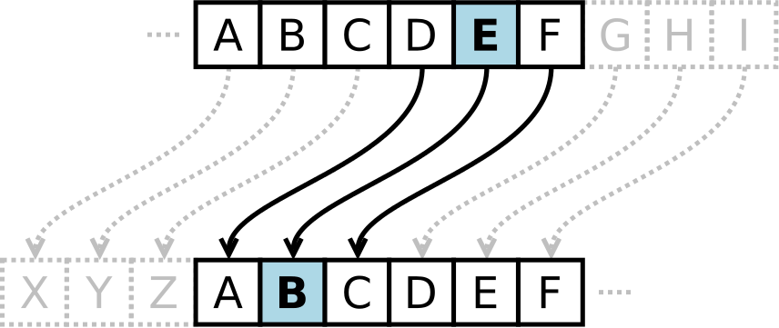

Alphabet shifiting
Shift cipher, as known as Caesar Cipher, is one of the simplest forms of encryption. It is a substitution cipher where each letter in the original message (called the plaintext) is replaced with a letter corresponding to a certain number of letters up or down in the alphabet.
In this way, a message that initially was quite readable, ends up in a form that can not be understood at a simple glance.
For example, here's the Caesar Cipher encryption of a message, using a right shift of 3.
Plaintext:
THE QUICK BROWN FOX JUMPS OVER THE LAZY DOG
Ciphertext:
QEB NRFZH YOLTK CLU GRJMP LSBO QEB IXWV ALD
